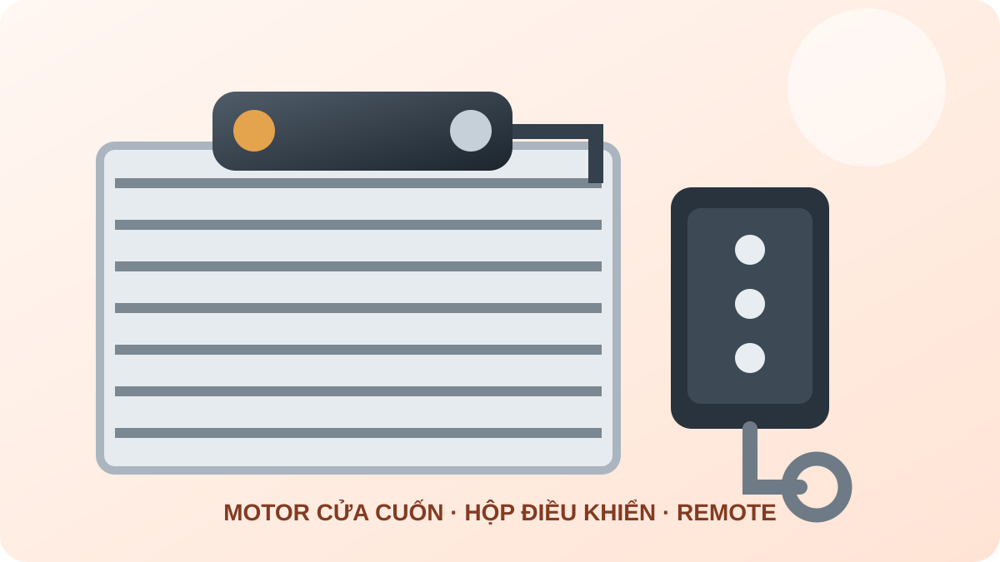

Motor cửa cuốn kêu tạch tạch nhưng không chạy tại Cẩm Phả

Khi bấm remote, motor cửa cuốn chỉ phát ra tiếng “tạch tạch” nhưng cửa không lên hoặc không xuống, nguyên nhân có thể nằm ở nguồn cấp điện, bộ điều khiển, tụ điện, phanh hoặc chính motor. Tiếng kêu chỉ là dấu hiệu ban đầu, không đủ để xác định hỏng bộ phận nào.
THỢ KHÓA LƯU ĐỘNG tiếp nhận thông tin sửa chữa cửa cuốn tại Cẩm Phả. Bạn nên mô tả hiện tượng và gọi trước để xác nhận khả năng hỗ trợ, lịch kiểm tra và chi phí dự kiến.
1. Những nguyên nhân có thể khiến motor kêu tạch tạch
- Nguồn điện không ổn định: nguồn cấp, aptomat hoặc dây dẫn có thể gặp vấn đề khiến thiết bị không hoạt động bình thường.
- Bộ nhận điều khiển: hộp nhận tín hiệu hoặc rơ-le có thể phát tiếng đóng ngắt nhưng không điều khiển motor chạy.
- Tụ điện hoặc motor: linh kiện bên trong có thể suy giảm hoặc hư hỏng; cần kiểm tra đúng thông số.
- Phanh hoặc cơ cấu truyền động: cửa bị kẹt, lệch hoặc có lực cản cũng có thể khiến hệ thống không vận hành như bình thường.
2. Có thể kiểm tra gì trước khi gọi thợ?
- Quan sát xem nguồn điện khu vực có đang hoạt động bình thường không.
- Kiểm tra remote có đèn báo khi bấm hay không; nếu có remote dự phòng, chỉ thử khi thao tác an toàn.
- Quan sát cửa từ vị trí an toàn, xem cửa có bị lệch, mắc vật cản hoặc có dấu hiệu hư hỏng rõ ràng không.
- Ghi lại tiếng kêu xuất hiện ở motor, hộp điều khiển hay remote và thời điểm xảy ra.
Lưu ý an toàn: Không tự tháo hộp điện, chạm dây dẫn, đấu tắt rơ-le, thay tụ điện hoặc đứng dưới thân cửa để kiểm tra. Nếu có mùi khét, tia lửa, khói, tiếng va đập mạnh hoặc cửa rơi bất thường, hãy ngừng sử dụng và giữ người tránh xa khu vực cửa.
3. Khi gọi thợ sửa cửa cuốn tại Cẩm Phả, nên nói gì?
- Địa chỉ hoặc khu vực cửa cuốn đang lắp đặt.
- Cửa đang không lên, không xuống hay chỉ nhúc nhích rồi dừng.
- Motor kêu liên tục hay chỉ kêu một vài tiếng “tạch tạch”.
- Remote có đèn báo không, có remote dự phòng hay không.
- Hệ thống có bộ lưu điện hay thiết bị điều khiển qua điện thoại không.
4. Chi phí kiểm tra và sửa chữa phụ thuộc điều gì?
Chi phí tùy nguyên nhân thực tế, loại motor, bộ điều khiển, linh kiện cần thay và vị trí hỗ trợ. Hãy đề nghị trao đổi rõ phí kiểm tra, phí di chuyển nếu có, phương án sửa và chi phí dự kiến trước khi đồng ý thực hiện.
Câu hỏi thường gặp
Motor kêu tạch tạch có chắc chắn bị hỏng motor không?
Không. Tiếng kêu có thể xuất phát từ nhiều bộ phận khác nhau như nguồn điện, hộp nhận, tụ điện hoặc phanh. Cần kiểm tra thực tế mới xác định được.
Bấm remote nhiều lần có làm cửa chạy lại không?
Không nên cố bấm liên tục. Nếu cửa hoặc motor đang có lỗi, thao tác lặp lại có thể làm tình trạng nghiêm trọng hơn.
Cửa cuốn mất điện có nên tự kéo lên không?
Chỉ sử dụng cơ cấu mở khẩn cấp nếu bạn đã được hướng dẫn đúng cách cho chính hệ thống cửa đó. Nếu không rõ cách vận hành, hãy gọi người có chuyên môn.
Liên hệ 090 402 6204 để trao đổi tình trạng cửa cuốn và xác nhận lịch hỗ trợ.